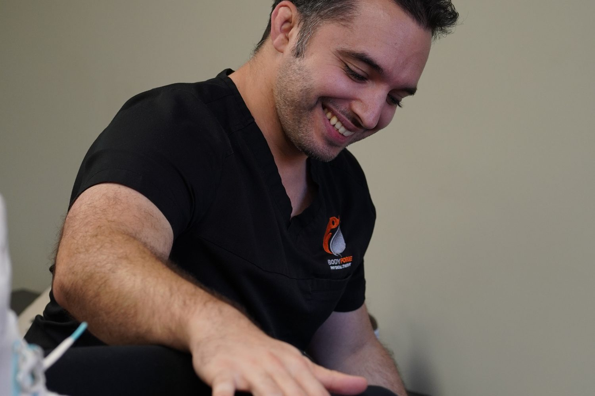

Service 01
Personalized physical therapy
The heart of the practice. One-to-one sessions built around your problem and your goal, so you get back to the things you actually want to do. Not a room full of people on machines.
- A full one-to-one visit with your clinician, every time
- Your exercise plan on the first day, not weeks later
- Hands-on treatment: massage, joint work and soft-tissue release
- Clear goals, tracked and logged every session
- Electrical stimulation, TENS and hot or cold therapy when they help
- What to keep doing once you finish, so it does not come back